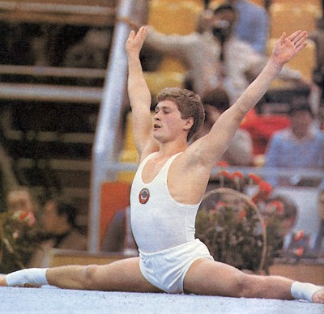

Yuri Korolev (USSR)
1981 and 1985 World AA Champion
1986 World
Cup AA Champion

Medal Total
- World Championships: 9
Gold, 3 Silver, 1 Bronze
- World Cup: 5 Gold, 4
Silver, 3 Bronze
- European Championships: 5
Gold, 7 Silver, 1 Bronze
Korolev was born on August 25, 1962 in Vladimir
and was coached by Alexander Fedorov at the Spartak club.
Competition Results
- 1977
Jr. USSR Championships (Master of Sport): 1st Team, 1st FX
-
- 1978
Jr. USSR Championships (Master of Sport): 3rd Team, 6th AA,
2nd FX
Jr. USSR Cup (Master of Sport): 3rd AA, 2nd FX, 3rd V, 4th HB
- Jr. USSR-GDR-HUN Meet: 4th AA
1979
Jr. Friendship Tournament (Druzhba): 1st Team, 1st AA, 1st FX, 1st HB,
2nd PH
Jr. USSR Cup: 4th AA, 2nd FX, 4th PH, 5th HB
RSFSR Championships: 1st PH, 1st HB
- 1980
- Jr. European Championships: 1st AA, 1st FX, 1st PH,
1st PB, 2nd HB, 8th V
Jr. Friendship Tournament (Druzhba): 1st Team, 1st AA, 1st FX, 1st PB,
2nd PH, 2nd HB
- Jr. USSR Championships: 5th Team, 3rd
AA, 1st FX, 2nd R
Jr. USSR Cup: 1st AA, 1st FX, 2nd R, 2nd HB, 3rd PH
-
- 1981
- European Championships: 2nd AA, 1st FX, 1st R,
2nd PH, 2nd V
- GBR-USSR Dual Meet: 1st Team, 1st AA
- Jr. Friendship Tournament (Druzhba): 1st Team, 1st AA
- Milan Grand Prix: 1st AA
- Moscow News: 1st AA
- University Games: 1st AA, 3rd FX, 3rd V, 3rd PB, 3rd
HB
- USSR Championships: 3rd AA, 1st FX, 1st
HB, 3rd PH, 7th R
- USSR Cup: 8th AA, 1st FX, 2nd V
- World Championships: 1st Team, 1st AA, 1st FX,
3rd PH
-
- 1982
- Budapest Invitational: 1st V, 1st HB, 2nd PH
- USSR Championships: 3rd AA, 1st FX, 1st
PB, 2nd V, 9th R
- World Cup: 3rd AA, 1st PB, 2nd FX, 2nd PH, 2nd
R, 3rd V, 7th HB
-
- 1983
- Dynamo Spartakiade: 2nd AA
- European Championships: 2nd AA, 1st FX, 1st
PB, 2nd PH, 3rd V, 7th HB
- University Games: 1st Team, 1st AA
- USA-USSR Dual Meet: 1st Team, 1st AA, 2nd V, 3rd R,
3rd PB
- USSR Championships: 2nd AA, 1st FX, 1st
PB, 3rd PH, 6th R, 6th V, 7th HB
- USSR Cup: 10th AA
USSR Spartakiade: 2nd AA, 1st FX, 1st PB
- World Championships: 2nd Team, 4th
FX, 5th PH, 6th PB
-
- 1984
- Moscow News: 1st AA, 1st FX, 1st PH, 1st V, 1st PB,
1st HB
- USSR Championships: 3rd AA, 1st FX, 2nd
PB
- USSR Cup: 8th AA
-
- 1985
- Shanghai International: 2nd AA
- USSR Championships: 10th AA, 1st FX, 3rd
V, 6th R
USSR Cup: 9th AA
- World Championships: 1st Team, 1st AA, 1st R,
1st V, 2nd FX
-
- 1986
- Goodwill Games: 1st Team, 1st AA, 1st FX, 1st R, 1st HB, 5th
V
- USA-USSR Dual Meet: 1st Team, 4th AA
- World Cup: 1st AA, 1st R, 1st V, 1st HB, 2nd FX, 3rd
PB
-
- 1987
- European Championships: 2nd AA, 1st V, 2nd FX,
5th PH
- University Games: 1st Team, 1st AA, 1st R, 2nd FX, 2nd
V, 2nd HB, 3rd PH
- USA-USSR Dual Meet: 1st Team, 2nd AA
USSR Championships: 1st FX, 3rd HB, 7th PB
- USSR Cup: 3rd AA
- World Championships: 1st Team, 2nd AA, 1st R,
4th PH, 4th V
-
- 1988
- Moscow News: 2nd AA, 1st FX, 1st R, 1st V, 1st PB
- USA-USSR Dual Meet: 1st Team, 1st AA
- USSR Championships: 4th AA
- USSR Cup: 24th AA
-
- 1989
USSR Championships: 4th PB
- USSR Cup: 12th AA
This page was last updated on August 26, 2007.
© Gymn Forum